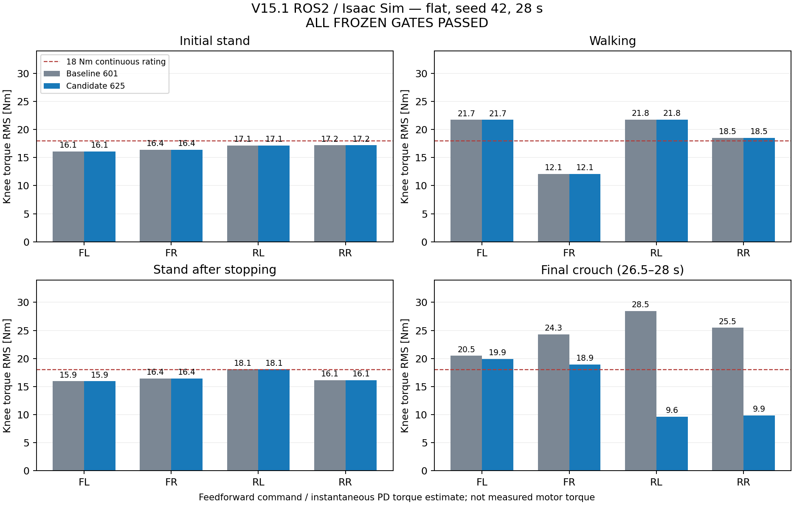
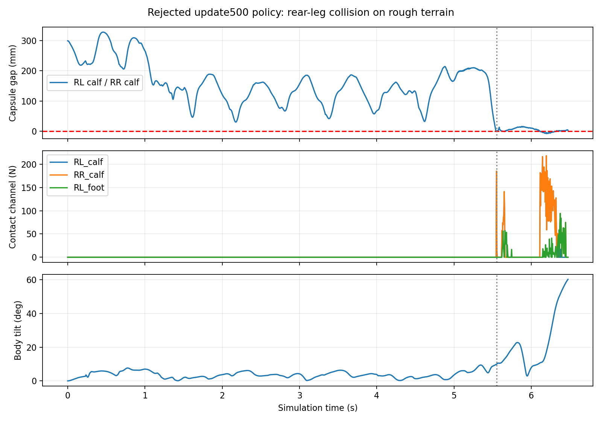

생성: 2026-10-01T13:37:06.054585+09:00 · 기계 판독용 요약 · 검증 설정과 소스 해시
전체 관절·단계 비교와 고정 채택 기준 · 통신 실패를 포함한 실행 기록
| 후보 | 최적화 기준 | 미달 항목 |
|---|---|---|
| posture03_15_afterwalk625 | 통과 | 없음 |
| posture09_15_cyclone621 | 탈락 | walk_rms |
| posture06_12_retry622 | 탈락 | task_motion_success, forward_progress, walk_command_mae, full_rated_normalized_rms |
| posture03_15_retry623 | 탈락 | poststop_stand_rms, walk_rms |
| posture09_15_transport620 | 탈락 | same_demo_scope, full_duration, task_motion_success, complete_motion_sequence, final_height, forward_progress, final_sit_window, final_crouch_rms, initial_stand_rms, poststop_stand_rms, walk_rms, walk_command_mae |
현재 검증 설정: {'stand_forward_shift_m': 0.03, 'height_drop': 0.1, 'speed': 0.4, 'initial_mode': 'SIT', 'demo': False, 'crouch_forward_shift_m': 0.15, 'crouch_shift_after_walk_only': True} · 근거 integration/625/result.json. 동작 성공과 토크 최적화 채택은 별도로 판정합니다.

학습 완료와 동작 성공은 별도 판정입니다. 현재 표시 정책: 현재 기준 정책339.
| 학습 작업 | 학습 | 비교 판정 | 체크포인트 업데이트 | 정격 부하 계수 |
|---|---|---|---|---|
| 589 | 완료 | 후보 전체 탈락 | 250, 500 | -0.020 |
| 598 | 완료 | 후보 전체 탈락 | 25, 50, 100 | -0.100 |
| 정책 | 지형 | 기존 판정 | +y 진행 m | 속도 MAE m/s | 평균 관절 RMS Nm | 절대 파워 W | 접촉 최대 N | 캡슐 간격 mm |
|---|---|---|---|---|---|---|---|---|
| baseline339 · NPZ | flat | 기준 | 6.63 | 0.099 | 12.61 | 105.16 | 0.00 | 120.70 |
| baseline339 · NPZ | rough | 기준 | 9.27 | 0.314 | 18.57 | 207.64 | 0.00 | 21.88 |
| candidate250 · NPZ | flat | 탈락 | 9.56 | 0.309 | 17.19 | 171.99 | 0.00 | 46.35 |
| candidate250 · NPZ | rough | 탈락 | 9.52 | 0.321 | 18.76 | 210.95 | 0.00 | 22.02 |
| candidate500 · NPZ | flat | 탈락 | 8.21 | 0.216 | 15.86 | 140.32 | 0.00 | 48.17 |
| candidate500 · NPZ | rough | 탈락 | 3.00 | 0.295 | 20.74 | 282.35 | 217.99 | -8.70 |
| candidate25 · NPZ | flat | 탈락 | 7.20 | 0.156 | 12.38 | 103.99 | 0.00 | 126.65 |
| candidate25 | rough | 생략: 평지 탈락 | — | — | — | — | — | — |
| candidate50 · NPZ | flat | 탈락 | 6.77 | 0.122 | 12.18 | 98.28 | 0.00 | 130.30 |
| candidate50 | rough | 생략: 평지 탈락 | — | — | — | — | — | — |
| candidate100 · NPZ | flat | 탈락 | 6.48 | 0.123 | 11.54 | 88.61 | 0.00 | 152.60 |
| candidate100 | rough | 생략: 평지 탈락 | — | — | — | — | — | — |
| 후보 | 평균 RMS 변화 % | 절대 파워 변화 % | 속도 MAE m/s | 기준 MAE m/s | 실패 게이트 | 거친 지형 평가 |
|---|---|---|---|---|---|---|
| candidate25 | -1.86 | -1.11 | 0.156263 | 0.099277 | command_tracking | 생략 |
| candidate50 | -3.47 | -6.54 | 0.122492 | 0.099277 | command_tracking | 생략 |
| candidate100 | -8.54 | -15.74 | 0.123195 | 0.099277 | command_tracking | 생략 |
속도 MAE 허용 증가는 고정 기준 +0.02 m/s입니다. 토크·파워 감소만으로 채택하지 않습니다. 평지 탈락 후보의 거친 지형과 추가 시드 평가는 생략되었으며, 검증 통과를 뜻하지 않습니다. 학습 결과 문서 JSON
589 후보의 전체 비교 JSON · 598 후보의 전체 비교 JSON
589 update500 / 594 rough seed42: 접촉 최대 217.99 N, 최소 캡슐 간격 -8.70 mm. 1 N 초과 최초 시점 5.55 s. 무충돌로 판정할 수 없습니다.
최소 간격 쌍: RL_calf ↔ RR_calf. 접촉력 기록은 몸체별 상대쌍 최대값이므로 정확한 힘 상대쌍은 미기록입니다.

실제 접촉 측정이 아닙니다. 이 쌍들은 물리 접촉이 필터되어 있으며, 양의 복원 간격이 다른 다리 사이의 실제 충돌을 무효화하지 않습니다.
| 기록 | 최소 프록시 간격 mm | 모델 복원 | 검증 최대 좌표/간격 오차 µm | 실제 같은 다리 접촉 측정 |
|---|---|---|---|---|
| 통합 597 | 227.24 | 복원 검증됨 | 2.647 | 아니오 |
| baseline339_flat_seed42 | 283.84 | 복원 검증됨 | 2.931 | 아니오 |
| baseline339_rough_seed42 | 266.55 | 복원 검증됨 | 4.570 | 아니오 |
| candidate250_flat_seed42 | 273.13 | 복원 검증됨 | 5.430 | 아니오 |
| candidate250_rough_seed42 | 267.40 | 복원 검증됨 | 5.005 | 아니오 |
| candidate500_flat_seed42 | 273.09 | 복원 검증됨 | 3.116 | 아니오 |
| candidate500_rough_seed42 | 268.89 | 복원 검증됨 | 1.590 | 아니오 |
| 작업 | 평가 범위 | 과제 판정 | 전체 시간 완료 | 기록 s | 실패 또는 제한 | 자료 |
|---|---|---|---|---|---|---|
| 591 | 전체 시퀀스 · flat | 실패 | 아니오 | 15.50 | TimeoutError('V15.1 command missing at 15.500s') | 상세 보고서 · 원본 JSON |
| 593 | 전체 시퀀스 · flat | 실패 | 예 | 28.00 | 요구 상태 전환 미완료 | 상세 보고서 · 원본 JSON |
| 597 | 전체 시퀀스 · flat | 실패 | 아니오 | 20.74 | RuntimeError("Robot terminated before reset; terms=['base_tilt']") | 상세 보고서 · 원본 JSON |
| 599 | 전체 시퀀스 · flat | 실패 | 예 | 28.00 | 요구 상태 전환 미완료 | 상세 보고서 · 원본 JSON |
| 601 | 전체 시퀀스 · flat | 성공 | 예 | 28.00 | — | 상세 보고서 · 원본 JSON |
| 602 | 단독 보행 · stairs_up | 실패 | 예 | 14.00 | 계단 상승·통과 사후 기준 미달 | 상세 보고서 · 원본 JSON |
| 616 | 범위 미기록 · — | 실패 | 아니오 | 0.00 | TimeoutError('V15.1 command missing at 0.000s') | 상세 보고서 (미완료) · 원본 JSON |
| 617 | 범위 미기록 · — | 실패 | 아니오 | 0.00 | TimeoutError('V15.1 command missing at 0.000s; command_received=False, status_received=False; sensor_readers=[1, 1, 1, 1]') | 상세 보고서 (미완료) · 원본 JSON |
| 618 | 범위 미기록 · — | 실패 | 아니오 | 0.00 | TimeoutError('V15.1 command missing at 0.000s; command_received=False, status_received=False; sensor_readers=[1, 1, 1, 1]') | 상세 보고서 (미완료) · 원본 JSON |
| 620 | 전체 시퀀스 · flat | 실패 | 아니오 | 1.91 | TimeoutError('V15.1 command missing at 1.905s; command_received=False, status_received=False; sensor_readers=[1, 1, 1, 1]') | 상세 보고서 (미완료) · 원본 JSON |
| 621 | 전체 시퀀스 · flat | 성공 | 예 | 28.00 | — | 상세 보고서 · 원본 JSON |
| 622 | 전체 시퀀스 · flat | 실패 | 예 | 28.00 | 요구 상태 전환 미완료 | 상세 보고서 · 원본 JSON |
| 623 | 전체 시퀀스 · flat | 성공 | 예 | 28.00 | — | 상세 보고서 · 원본 JSON |
| 624 | 전체 시퀀스 · flat | 실패 | 아니오 | 0.00 | Isaac startup failed before physics: viewport set_camera_view accessed invalid null prim; Slurm FAILED 1:0 | 상세 보고서 (미완료) · 원본 JSON (미완료) |
| 625 | 전체 시퀀스 · flat | 성공 | 예 | 28.00 | — | 상세 보고서 · 원본 JSON |
원시 task_success=true는 시간 완료와 충돌 검사만 반영합니다. 계단 상승 성공을 뜻하지 않습니다. 원본은 보존했고, 별도의 기존 방향성·전체 계단 통과 기준으로 판정했습니다.
| 방향성 계단 과제 | 전체 계단 통과 | 진행 거리 m | 최종 지형 상승 m | 전체 시간 완료 |
|---|---|---|---|---|
| 실패 | 실패 | 0.835 | 0.000 | 예 |
지형 상승량은 설정된 메시와 몸통 XY에서 복원한 기하학 값이며 발 접촉 높이 실측은 아닙니다. 사후 계단 분석 JSON
| 통합 작업 | 다른 다리 실제 접촉 최대 N | 다른 다리 최소 프록시 mm | 같은 다리 허벅지–발 최소 mm | 같은 다리 측정 범위 |
|---|---|---|---|---|
| 591 | 0.00 | 299.40 | — | 기하학 프록시 · 실제 접촉 미측정 |
| 593 | 0.00 | 44.36 | — | 기하학 프록시 · 실제 접촉 미측정 |
| 597 | 0.00 | 26.49 | — | 기하학 프록시 · 실제 접촉 미측정 |
| 599 | 0.00 | 68.85 | 268.80 | 기하학 프록시 · 실제 접촉 미측정 |
| 601 | 0.00 | 120.16 | 268.78 | 기하학 프록시 · 실제 접촉 미측정 |
| 602 | 0.00 | 204.98 | 283.84 | 기하학 프록시 · 실제 접촉 미측정 |
| 621 | 0.00 | 119.45 | 268.25 | 기하학 프록시 · 실제 접촉 미측정 |
| 622 | 0.00 | 240.19 | 268.28 | 기하학 프록시 · 실제 접촉 미측정 |
| 623 | 0.00 | 117.06 | 268.25 | 기하학 프록시 · 실제 접촉 미측정 |
| 625 | 0.00 | 120.16 | 268.80 | 기하학 프록시 · 실제 접촉 미측정 |
최신 전체 시퀀스 625: 성공.
최신 단독 계단 보행 602: 실패.
최근 기록 작업 번호: 625 (서로 다른 평가 범위를 통합 판정하지 않음).
후반의 복귀 STAND를 섞지 않고 초기 기립 구간만 비교합니다. 이 구간의 토크 감소와 전체 동작 성공은 별도 결과입니다. 전류는 이상적 모터 전류 환산입니다.
두 기록 모두 구동 PD 게인0, 기록 토크=feedforward 명령을 원시 배열에서 확인했습니다. 물리 시뮬레이션에서 사용된 native effort 명령이며 구동력 센서 실측은 아닙니다. 전체 과제: 실패.
| 관절 | 593 RMS Nm | 597 RMS Nm | RMS 변화 % | 597 최대 Nm | 597 전류 RMS A | 597 전류 최대 A | 정격 Nm |
|---|---|---|---|---|---|---|---|
| FL_HAA | 0.12 | 0.12 | 0.0 | 0.17 | 0.09 | 0.14 | 8.3 |
| FL_HFE | 5.31 | 5.31 | 0.0 | 5.42 | 3.69 | 3.76 | 18.0 |
| FL_KFE | 16.82 | 16.82 | 0.0 | 16.86 | 11.68 | 11.71 | 18.0 |
| FR_HAA | 0.03 | 0.03 | 0.0 | 0.07 | 0.03 | 0.05 | 8.3 |
| FR_HFE | 5.34 | 5.34 | 0.0 | 5.48 | 3.71 | 3.81 | 18.0 |
| FR_KFE | 17.05 | 17.05 | 0.0 | 17.12 | 11.84 | 11.89 | 18.0 |
| RL_HAA | 0.03 | 0.03 | 0.0 | 0.07 | 0.03 | 0.05 | 8.3 |
| RL_HFE | 3.49 | 3.49 | 0.0 | 3.55 | 2.42 | 2.47 | 18.0 |
| RL_KFE | 20.31 | 20.31 | 0.0 | 20.45 | 14.10 | 14.20 | 18.0 |
| RR_HAA | 0.10 | 0.10 | 0.0 | 0.13 | 0.08 | 0.11 | 8.3 |
| RR_HFE | 3.57 | 3.57 | 0.0 | 3.66 | 2.48 | 2.54 | 18.0 |
| RR_KFE | 20.30 | 20.30 | 0.0 | 20.43 | 14.10 | 14.19 | 18.0 |
두 기록 모두 구동 PD 게인0, 기록 토크=feedforward 명령을 원시 배열에서 확인했습니다. 물리 시뮬레이션에서 사용된 native effort 명령이며 구동력 센서 실측은 아닙니다. 전체 과제: 실패.
| 관절 | 593 RMS Nm | 599 RMS Nm | RMS 변화 % | 599 최대 Nm | 599 전류 RMS A | 599 전류 최대 A | 정격 Nm |
|---|---|---|---|---|---|---|---|
| FL_HAA | 0.12 | 0.15 | 30.2 | 0.19 | 0.12 | 0.15 | 8.3 |
| FL_HFE | 5.31 | 1.56 | -70.6 | 1.76 | 1.09 | 1.22 | 18.0 |
| FL_KFE | 16.82 | 16.11 | -4.2 | 16.26 | 11.19 | 11.29 | 18.0 |
| FR_HAA | 0.03 | 0.05 | 61.5 | 0.09 | 0.04 | 0.07 | 8.3 |
| FR_HFE | 5.34 | 1.58 | -70.4 | 1.81 | 1.10 | 1.26 | 18.0 |
| FR_KFE | 17.05 | 16.41 | -3.8 | 16.46 | 11.40 | 11.43 | 18.0 |
| RL_HAA | 0.03 | 0.04 | 16.4 | 0.06 | 0.03 | 0.05 | 8.3 |
| RL_HFE | 3.49 | 1.00 | -71.4 | 1.11 | 0.69 | 0.77 | 18.0 |
| RL_KFE | 20.31 | 17.14 | -15.6 | 17.39 | 11.90 | 12.08 | 18.0 |
| RR_HAA | 0.10 | 0.08 | -21.9 | 0.11 | 0.06 | 0.09 | 8.3 |
| RR_HFE | 3.57 | 1.10 | -69.1 | 1.22 | 0.77 | 0.85 | 18.0 |
| RR_KFE | 20.30 | 17.19 | -15.3 | 17.37 | 11.94 | 12.06 | 18.0 |
두 기록 모두 구동 PD 게인0, 기록 토크=feedforward 명령을 원시 배열에서 확인했습니다. 물리 시뮬레이션에서 사용된 native effort 명령이며 구동력 센서 실측은 아닙니다. 전체 과제: 성공.
| 관절 | 593 RMS Nm | 601 RMS Nm | RMS 변화 % | 601 최대 Nm | 601 전류 RMS A | 601 전류 최대 A | 정격 Nm |
|---|---|---|---|---|---|---|---|
| FL_HAA | 0.12 | 0.15 | 30.2 | 0.19 | 0.12 | 0.15 | 8.3 |
| FL_HFE | 5.31 | 1.56 | -70.6 | 1.76 | 1.09 | 1.22 | 18.0 |
| FL_KFE | 16.82 | 16.11 | -4.2 | 16.26 | 11.19 | 11.29 | 18.0 |
| FR_HAA | 0.03 | 0.05 | 61.5 | 0.09 | 0.04 | 0.07 | 8.3 |
| FR_HFE | 5.34 | 1.58 | -70.4 | 1.81 | 1.10 | 1.26 | 18.0 |
| FR_KFE | 17.05 | 16.41 | -3.8 | 16.46 | 11.40 | 11.43 | 18.0 |
| RL_HAA | 0.03 | 0.04 | 16.4 | 0.06 | 0.03 | 0.05 | 8.3 |
| RL_HFE | 3.49 | 1.00 | -71.4 | 1.11 | 0.69 | 0.77 | 18.0 |
| RL_KFE | 20.31 | 17.14 | -15.6 | 17.39 | 11.90 | 12.08 | 18.0 |
| RR_HAA | 0.10 | 0.08 | -21.9 | 0.11 | 0.06 | 0.09 | 8.3 |
| RR_HFE | 3.57 | 1.10 | -69.1 | 1.22 | 0.77 | 0.85 | 18.0 |
| RR_KFE | 20.30 | 17.19 | -15.3 | 17.37 | 11.94 | 12.06 | 18.0 |
두 기록 모두 구동 PD 게인0, 기록 토크=feedforward 명령을 원시 배열에서 확인했습니다. 물리 시뮬레이션에서 사용된 native effort 명령이며 구동력 센서 실측은 아닙니다. 전체 과제: 성공.
| 관절 | 593 RMS Nm | 621 RMS Nm | RMS 변화 % | 621 최대 Nm | 621 전류 RMS A | 621 전류 최대 A | 정격 Nm |
|---|---|---|---|---|---|---|---|
| FL_HAA | 0.12 | 0.17 | 45.8 | 0.22 | 0.14 | 0.18 | 8.3 |
| FL_HFE | 5.31 | 6.35 | 19.7 | 6.55 | 4.41 | 4.55 | 18.0 |
| FL_KFE | 16.82 | 14.06 | -16.4 | 14.16 | 9.76 | 9.83 | 18.0 |
| FR_HAA | 0.03 | 0.04 | 39.0 | 0.10 | 0.04 | 0.08 | 8.3 |
| FR_HFE | 5.34 | 6.27 | 17.6 | 6.46 | 4.36 | 4.48 | 18.0 |
| FR_KFE | 17.05 | 14.20 | -16.7 | 14.28 | 9.86 | 9.91 | 18.0 |
| RL_HAA | 0.03 | 0.05 | 50.5 | 0.09 | 0.04 | 0.07 | 8.3 |
| RL_HFE | 3.49 | 4.14 | 18.6 | 4.30 | 2.87 | 2.99 | 18.0 |
| RL_KFE | 20.31 | 10.29 | -49.3 | 10.40 | 7.14 | 7.22 | 18.0 |
| RR_HAA | 0.10 | 0.05 | -54.0 | 0.09 | 0.04 | 0.07 | 8.3 |
| RR_HFE | 3.57 | 3.96 | 10.9 | 4.17 | 2.75 | 2.90 | 18.0 |
| RR_KFE | 20.30 | 10.27 | -49.4 | 10.38 | 7.13 | 7.21 | 18.0 |
두 기록 모두 구동 PD 게인0, 기록 토크=feedforward 명령을 원시 배열에서 확인했습니다. 물리 시뮬레이션에서 사용된 native effort 명령이며 구동력 센서 실측은 아닙니다. 전체 과제: 실패.
| 관절 | 593 RMS Nm | 622 RMS Nm | RMS 변화 % | 622 최대 Nm | 622 전류 RMS A | 622 전류 최대 A | 정격 Nm |
|---|---|---|---|---|---|---|---|
| FL_HAA | 0.12 | 0.16 | 38.9 | 0.21 | 0.13 | 0.17 | 8.3 |
| FL_HFE | 5.31 | 2.42 | -54.4 | 2.66 | 1.68 | 1.85 | 18.0 |
| FL_KFE | 16.82 | 15.23 | -9.4 | 15.31 | 10.58 | 10.63 | 18.0 |
| FR_HAA | 0.03 | 0.05 | 56.9 | 0.10 | 0.04 | 0.08 | 8.3 |
| FR_HFE | 5.34 | 2.38 | -55.4 | 2.55 | 1.65 | 1.77 | 18.0 |
| FR_KFE | 17.05 | 15.42 | -9.6 | 15.49 | 10.71 | 10.76 | 18.0 |
| RL_HAA | 0.03 | 0.05 | 74.7 | 0.10 | 0.04 | 0.08 | 8.3 |
| RL_HFE | 3.49 | 1.57 | -55.1 | 1.76 | 1.09 | 1.23 | 18.0 |
| RL_KFE | 20.31 | 13.70 | -32.5 | 13.81 | 9.52 | 9.59 | 18.0 |
| RR_HAA | 0.10 | 0.05 | -49.3 | 0.08 | 0.04 | 0.07 | 8.3 |
| RR_HFE | 3.57 | 1.44 | -59.8 | 1.65 | 1.00 | 1.15 | 18.0 |
| RR_KFE | 20.30 | 13.70 | -32.5 | 13.82 | 9.51 | 9.60 | 18.0 |
두 기록 모두 구동 PD 게인0, 기록 토크=feedforward 명령을 원시 배열에서 확인했습니다. 물리 시뮬레이션에서 사용된 native effort 명령이며 구동력 센서 실측은 아닙니다. 전체 과제: 성공.
| 관절 | 593 RMS Nm | 623 RMS Nm | RMS 변화 % | 623 최대 Nm | 623 전류 RMS A | 623 전류 최대 A | 정격 Nm |
|---|---|---|---|---|---|---|---|
| FL_HAA | 0.12 | 0.17 | 45.8 | 0.22 | 0.14 | 0.18 | 8.3 |
| FL_HFE | 5.31 | 1.44 | -72.9 | 1.60 | 1.00 | 1.11 | 18.0 |
| FL_KFE | 16.82 | 16.05 | -4.6 | 16.12 | 11.15 | 11.19 | 18.0 |
| FR_HAA | 0.03 | 0.07 | 131.8 | 0.12 | 0.06 | 0.10 | 8.3 |
| FR_HFE | 5.34 | 1.51 | -71.7 | 1.65 | 1.05 | 1.15 | 18.0 |
| FR_KFE | 17.05 | 16.37 | -4.0 | 16.49 | 11.37 | 11.45 | 18.0 |
| RL_HAA | 0.03 | 0.03 | -13.3 | 0.05 | 0.02 | 0.04 | 8.3 |
| RL_HFE | 3.49 | 0.89 | -74.4 | 1.02 | 0.62 | 0.71 | 18.0 |
| RL_KFE | 20.31 | 17.05 | -16.0 | 17.17 | 11.84 | 11.92 | 18.0 |
| RR_HAA | 0.10 | 0.09 | -5.1 | 0.13 | 0.08 | 0.11 | 8.3 |
| RR_HFE | 3.57 | 1.08 | -69.7 | 1.19 | 0.75 | 0.83 | 18.0 |
| RR_KFE | 20.30 | 17.07 | -15.9 | 17.19 | 11.86 | 11.94 | 18.0 |
두 기록 모두 구동 PD 게인0, 기록 토크=feedforward 명령을 원시 배열에서 확인했습니다. 물리 시뮬레이션에서 사용된 native effort 명령이며 구동력 센서 실측은 아닙니다. 전체 과제: 성공.
초기 기립에서 뒤 무릎 RMS 감소: RL_KFE 15.6%, RR_KFE 15.3%. 무릎 최대 RMS 17.19 Nm. 이 구간의 개선은 확인되었지만 전체 동작 과제는 성공입니다.
| 관절 | 593 RMS Nm | 625 RMS Nm | RMS 변화 % | 625 최대 Nm | 625 전류 RMS A | 625 전류 최대 A | 정격 Nm |
|---|---|---|---|---|---|---|---|
| FL_HAA | 0.12 | 0.15 | 30.2 | 0.19 | 0.12 | 0.15 | 8.3 |
| FL_HFE | 5.31 | 1.56 | -70.6 | 1.76 | 1.09 | 1.22 | 18.0 |
| FL_KFE | 16.82 | 16.11 | -4.2 | 16.26 | 11.19 | 11.29 | 18.0 |
| FR_HAA | 0.03 | 0.05 | 61.5 | 0.09 | 0.04 | 0.07 | 8.3 |
| FR_HFE | 5.34 | 1.58 | -70.4 | 1.81 | 1.10 | 1.26 | 18.0 |
| FR_KFE | 17.05 | 16.41 | -3.8 | 16.46 | 11.40 | 11.43 | 18.0 |
| RL_HAA | 0.03 | 0.04 | 16.4 | 0.06 | 0.03 | 0.05 | 8.3 |
| RL_HFE | 3.49 | 1.00 | -71.4 | 1.11 | 0.69 | 0.77 | 18.0 |
| RL_KFE | 20.31 | 17.14 | -15.6 | 17.39 | 11.90 | 12.08 | 18.0 |
| RR_HAA | 0.10 | 0.08 | -21.9 | 0.11 | 0.06 | 0.09 | 8.3 |
| RR_HFE | 3.57 | 1.10 | -69.1 | 1.22 | 0.77 | 0.85 | 18.0 |
| RR_KFE | 20.30 | 17.19 | -15.3 | 17.37 | 11.94 | 12.06 | 18.0 |
현재 기준 정책339 · 전류=|토크|/(Kt×감속비), 효율1. 배터리 전류가 아닙니다.
| 관절 | 정격 Nm | 시뮬 상한 Nm | 토크 RMS Nm | 토크 최대 Nm | 전류 RMS A | 전류 최대 A |
|---|---|---|---|---|---|---|
| FL_HAA | 8.3 | 24.8 | 10.00 | 24.55 | 8.13 | 19.96 |
| FL_HFE | 18.0 | 48.0 | 9.60 | 47.52 | 6.67 | 33.00 |
| FL_KFE | 18.0 | 48.0 | 21.75 | 47.52 | 15.11 | 33.00 |
| FR_HAA | 8.3 | 24.8 | 11.07 | 24.55 | 9.00 | 19.96 |
| FR_HFE | 18.0 | 48.0 | 9.00 | 47.52 | 6.25 | 33.00 |
| FR_KFE | 18.0 | 48.0 | 12.02 | 47.52 | 8.35 | 33.00 |
| RL_HAA | 8.3 | 24.8 | 6.86 | 24.55 | 5.57 | 19.96 |
| RL_HFE | 18.0 | 48.0 | 12.48 | 47.52 | 8.66 | 33.00 |
| RL_KFE | 18.0 | 48.0 | 21.35 | 47.52 | 14.83 | 33.00 |
| RR_HAA | 8.3 | 24.8 | 9.60 | 24.55 | 7.81 | 19.96 |
| RR_HFE | 18.0 | 48.0 | 9.21 | 34.01 | 6.39 | 23.62 |
| RR_KFE | 18.0 | 48.0 | 18.43 | 47.52 | 12.80 | 33.00 |
| 관절 | 정격 Nm | 시뮬 상한 Nm | 토크 RMS Nm | 토크 최대 Nm | 전류 RMS A | 전류 최대 A |
|---|---|---|---|---|---|---|
| FL_HAA | 8.3 | 24.8 | 12.09 | 24.55 | 9.83 | 19.96 |
| FL_HFE | 18.0 | 48.0 | 16.62 | 47.52 | 11.54 | 33.00 |
| FL_KFE | 18.0 | 48.0 | 30.21 | 47.52 | 20.98 | 33.00 |
| FR_HAA | 8.3 | 24.8 | 11.02 | 24.55 | 8.96 | 19.96 |
| FR_HFE | 18.0 | 48.0 | 15.73 | 47.52 | 10.92 | 33.00 |
| FR_KFE | 18.0 | 48.0 | 23.94 | 47.52 | 16.63 | 33.00 |
| RL_HAA | 8.3 | 24.8 | 8.44 | 24.55 | 6.86 | 19.96 |
| RL_HFE | 18.0 | 48.0 | 15.88 | 47.52 | 11.03 | 33.00 |
| RL_KFE | 18.0 | 48.0 | 30.07 | 47.52 | 20.88 | 33.00 |
| RR_HAA | 8.3 | 24.8 | 9.82 | 24.55 | 7.98 | 19.96 |
| RR_HFE | 18.0 | 48.0 | 17.05 | 47.52 | 11.84 | 33.00 |
| RR_KFE | 18.0 | 48.0 | 32.00 | 47.52 | 22.22 | 33.00 |
빨간 RMS는 정격 토크 초과입니다. 시뮬레이션 상한 이하는 연속 운전 또는 열 안전성의 증거가 아닙니다.
네 발 접촉점을 고정한 동역학 계산입니다. 모델 예측을 실제 토크 개선으로 단정하지 않습니다. 실제 적용 결과는 위의 초기 STAND 비교 및 최신 전체 시퀀스 625 (성공)에서 별도로 확인합니다.
| 몸통 높이 m | 앞쪽 이동 m | 최대 정격 비율 | 뒤 왼쪽 KFE Nm | 뒤 오른쪽 KFE Nm | 최소 다리 간격 mm |
|---|---|---|---|---|---|
| 0.364 | 0.000 | 1.604 | -28.76 | -28.86 | 299.70 |
| 0.364 | 0.120 | 1.074 | -13.31 | -13.40 | 299.70 |
| 0.394 | 0.120 | 0.977 | -11.91 | -12.01 | 299.70 |
| 0.424 | 0.090 | 0.943 | -13.57 | -13.69 | 299.70 |
| 0.464 | 0.000 | 1.121 | -20.00 | -20.18 | 299.70 |
| 0.464 | 0.030 | 0.944 | -16.82 | -16.99 | 299.70 |
44개 자세 수치 · 재현 스크립트. 모델의 관절 각도 한도는 무한대이며 하드웨어 각도 한도는 확인되지 않았습니다.